COZY DAYS · M4 PERIOD REVIEW
生理期视觉核验
应用截图由 Playwright 在 05ad5ae79f315eda81d38194ecccffcbd29282c6 生成，使用 Chromium、合成日期和独立浏览器上下文。头图为页面初始位置；日记和贴士截图在实际滚动 .period-page 后截取。它们不是整页设计稿，也没有把参考图裁片放进应用。
三种手机视口均检查了头图、日历、日记和贴士卡片。日记胶带、日历花朵、书本及卡片内容不重叠；装饰不接收指针事件。插画缺口仍保留在素材图册中。
真实应用截图 · 页面顶部
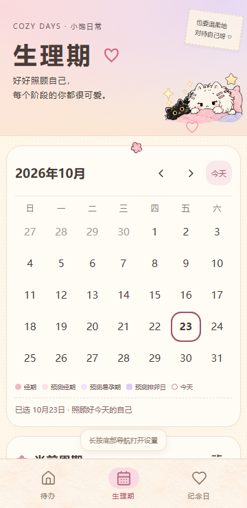
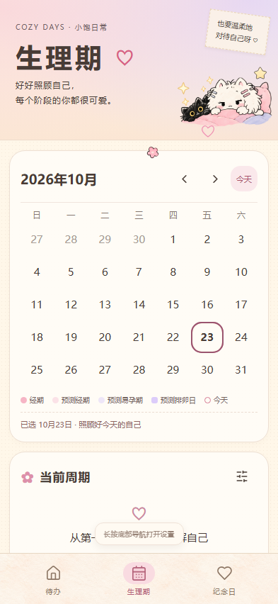
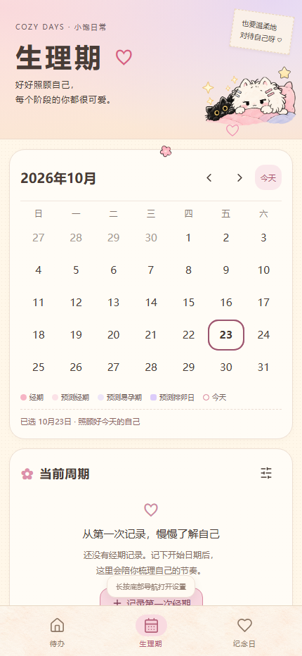
真实应用截图 · 滚动到日记卡片
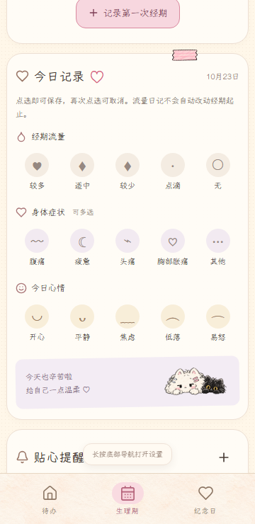
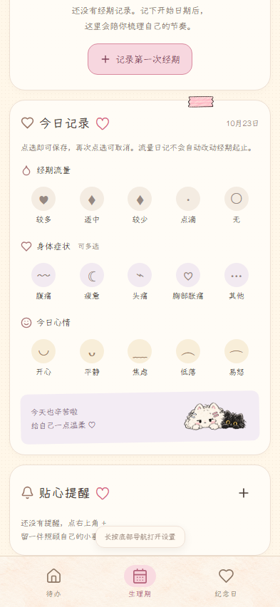
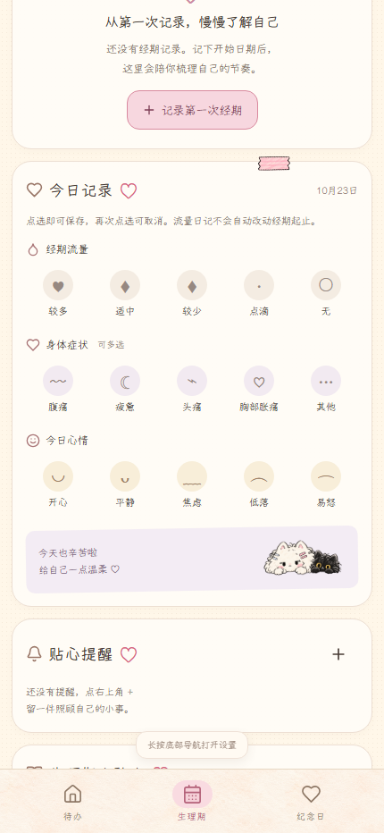
真实应用截图 · 滚动到贴士卡片
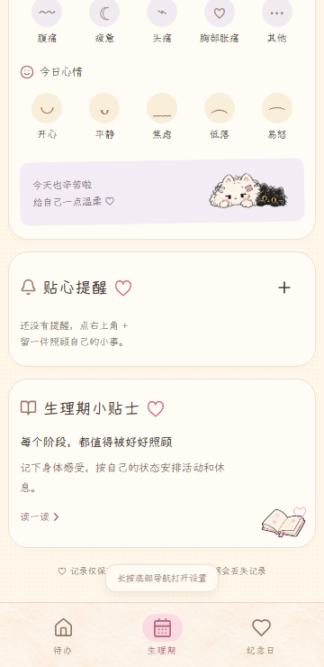
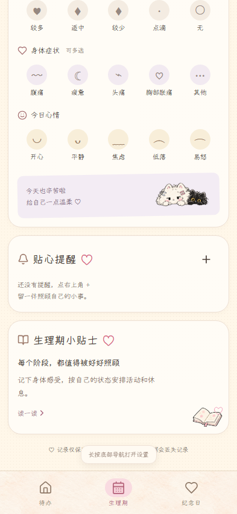
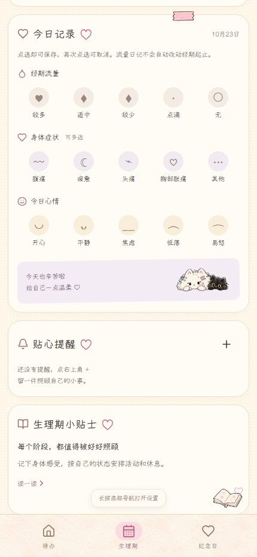
素材透明边缘 · 浅底与深底
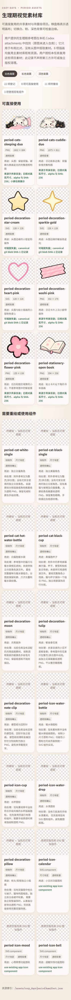
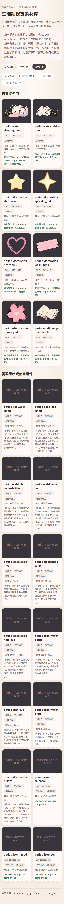
对照参考：用户提供的理期设计图附件 SHA-256 9d19d52870789f086461e245cf8ad383ecd61ec0ebd965ef61dbf63870576a38，原图留在本机附件目录，未复制入仓库。当前复用素材和参考图在纸感、双猫、粉紫配色上保持同一方向；参考中的月亮、郁金香、暖水袋、杯子、便签场景等独立插画仍缺失。